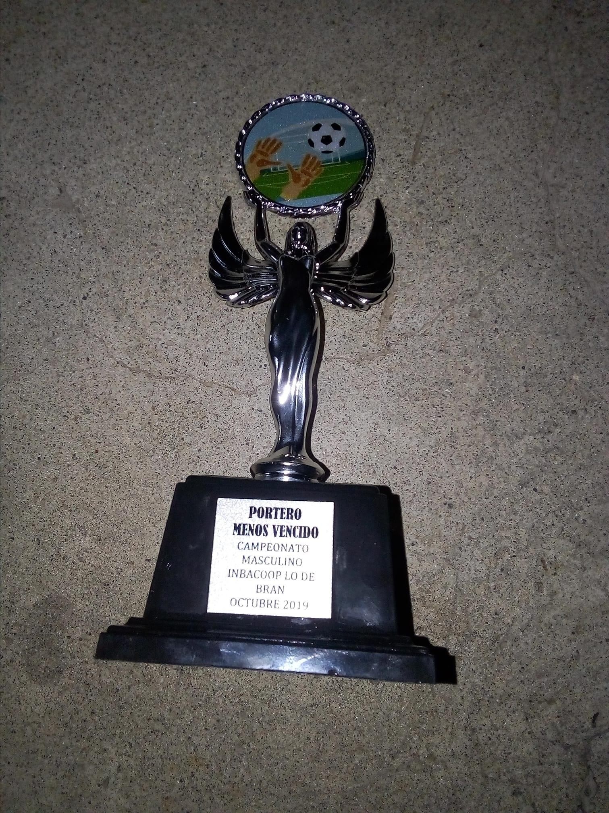

VER MENU
Intereses personales
Mi pasión por el fútbol
Desde que era pequeño, el fútbol ha sido una de las actividades que más ha marcado mi vida. Recuerdo que desde mis primeros años me llamaba la atención correr detrás de un balón, ya fuera en la calle, en la escuela o en cualquier espacio donde pudiera jugar. Poco a poco, este deporte se convirtió en algo más que un simple pasatiempo: se volvió una de mis pasiones.
Cada vez que juego fútbol, siento una gran alegría y libertad. Es un momento en el que puedo olvidarme de los problemas, dejar el estrés a un lado y enfocarme únicamente en el juego. Correr en la cancha, compartir con compañeros y disfrutar cada jugada me ayuda a relajarme y a sentirme mejor emocionalmente.
Además, el fútbol me ha enseñado muchas cosas importantes, como el trabajo en equipo, la disciplina y el esfuerzo. También me ha ayudado a pensar con más claridad, ya que al liberar mi mente del estrés, puedo reflexionar mejor sobre diferentes aspectos de mi vida.
Para mí, el fútbol no solo es un deporte, sino una forma de equilibrio. Es un espacio donde encuentro alegría, tranquilidad y motivación. Sin duda, ha sido y sigue siendo una parte importante de mi historia, acompañándome en diferentes etapas de mi vida.
